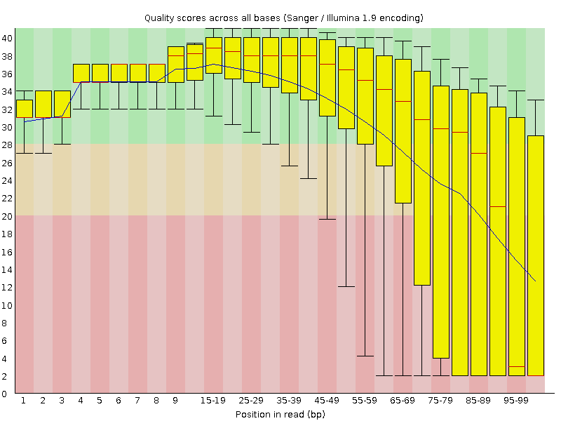
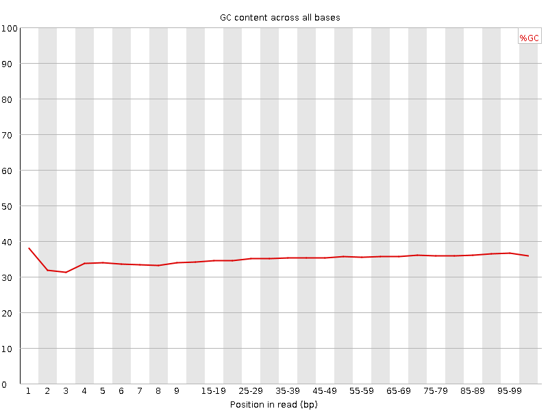

![[OK]](Icons/tick.png) Basic Statistics
Basic Statistics
| Measure | Value |
|---|---|
| Filename | 20120921-hir_hay1_800_R1.fastq.gz |
| File type | Conventional base calls |
| Encoding | Sanger / Illumina 1.9 |
| Total Sequences | 250000 |
| Filtered Sequences | 0 |
| Sequence length | 101 |
| %GC | 35 |
![[FAIL]](Icons/error.png) Per base sequence quality
Per base sequence quality

Per sequence quality scores

Per base sequence content

Per base GC content

Per sequence GC content

Per base N content

Sequence Length Distribution

Sequence Duplication Levels

Overrepresented sequences
No overrepresented sequences
Kmer Content

| Sequence | Count | Obs/Exp Overall | Obs/Exp Max | Max Obs/Exp Position |
|---|---|---|---|---|
| GGGGG | 33630 | 7.381798 | 17.530544 | 95-97 |
| CCCCC | 10875 | 2.7109761 | 6.2148104 | 90-94 |
| GGGGA | 19600 | 2.3982155 | 9.197607 | 2 |
| GGGCC | 7615 | 1.7587725 | 15.502743 | 1 |
| GCCGC | 6895 | 1.6335267 | 5.8826494 | 25-29 |
| GGCCC | 6695 | 1.5861435 | 6.6639376 | 9 |
| GGCCG | 6810 | 1.5728482 | 5.5108147 | 25-29 |
| GATCC | 21485 | 1.5426428 | 6.267777 | 5 |
| GGATC | 21200 | 1.4839308 | 6.3139586 | 4 |
| CGGCC | 6150 | 1.457025 | 5.560941 | 25-29 |
| GGATG | 19780 | 1.3497453 | 5.4603505 | 4 |
| GGGAT | 18970 | 1.2944726 | 5.725095 | 3 |
| GGCCA | 9870 | 1.2707312 | 9.303232 | 2 |
| GCATC | 17130 | 1.2299498 | 5.3624315 | 8 |
| CTGGA | 17215 | 1.2049938 | 5.0919027 | 2 |
| GATGC | 17020 | 1.1913444 | 5.465308 | 5 |
| GCCAT | 15155 | 1.088143 | 5.5713573 | 3 |